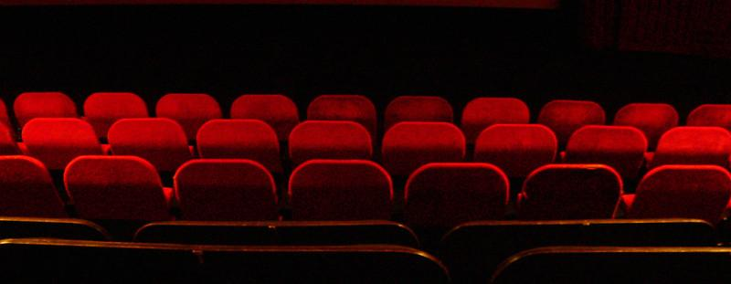

Image: cinema seats / CC BY-NC
These OER course materials introduce techniques for reading and analyzing a diverse array of stage texts. Through cultural perspectives and dramaturgical research, users will interpret scripts and explore their significance in various contexts. This is a statewide Guaranteed Transfer course in the GT-AH1 category.
Explores theories about the origins of Greek theatre, including its connection to the worship of Dionysus and the Dionysia festival in Athens. A discussion of the layout of ancient Greek theatres (theatron, orchestra, skene, proskenion) is included, along with how those terms relate to modern theatre vocabulary. A discussion of ancient Greek acting style is also included, along with a historical account of the actor Polus.
Introduces the "what statement," a one-sentence summary that captures the essence of a story. A discussion of what makes a what statement effective is included, along with tips for identifying the beginning, middle, and end of a story, pinpointing theme and genre, and using descriptive language while avoiding opinion-based words. Practice guidance is also included to help students draft and refine their own what statements.
Offers students a practical introduction to visual storytelling by explaining how directors and creators use specific types and sizes of film shots—such as the master shot, establishing shot, close-up, and over-the-shoulder—to articulate narrative, evoke emotion, and define dramatic elements. The resource connects these visual techniques to the core elements of dramatic analysis, providing terminology and guidance that help students identify and describe how plot, character, and theme are conveyed through shot composition. It also covers the process of storyboarding, equipping learners with both analytical vocabulary and the tools needed to translate dramatic texts into effective visual sequences, supporting deeper understanding and critical engagement with film and script analysis.
Introduces students to the foundational framework of dramatic analysis by exploring Aristotle's six key elements: plot, character, thought, diction, melody, and spectacle. Through modern examples and classic definitions, this resource equips learners to break down and describe the structural building blocks of any dramatic work. Students gain the necessary vocabulary and analytical skills to identify and examine how narrative, character motivation, language, music, and visual elements interact within dramatic texts, supporting a comprehensive and critical understanding of theatrical storytelling.
Provides an engaging overview of various influential philosophical movements or "isms" that have shaped theatrical storytelling and performance styles across history. It explains key movements such as Realism, which depicts everyday life and ordinary people with authenticity; Naturalism, which extends realism into detailed, often gritty depictions of life's hardships; Didacticism or Epic Theatre, which aims to provoke social and political reflection through presentational techniques; Absurdism, emphasizing the meaningless and illogical nature of human existence through circular, nonsensical plots; Symbolism, which prioritizes mood, imagery, and the mysterious over literal narratives; and Neo-Humanism, a modern movement advocating for diverse and inclusive storytelling that honors underrepresented voices. Through descriptions, historical contexts, representative playwrights, and multimedia links, this resource equips learners with foundational knowledge of theatrical philosophies essential for understanding the evolution and diversity of dramatic art.